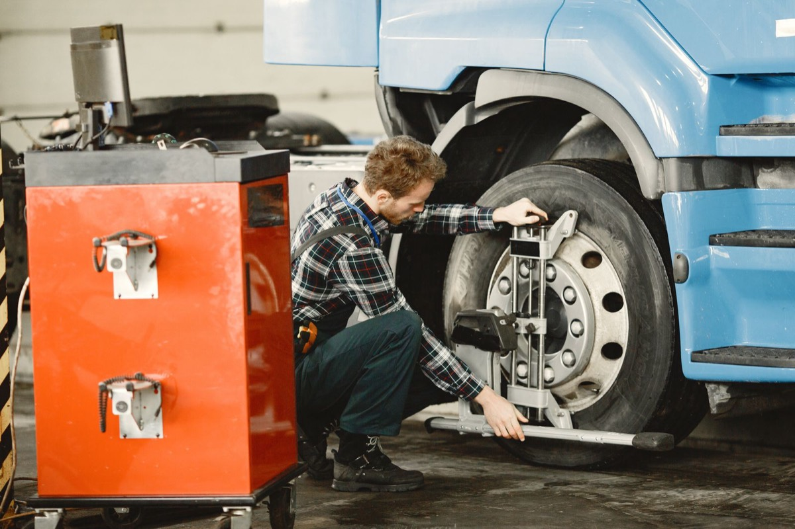
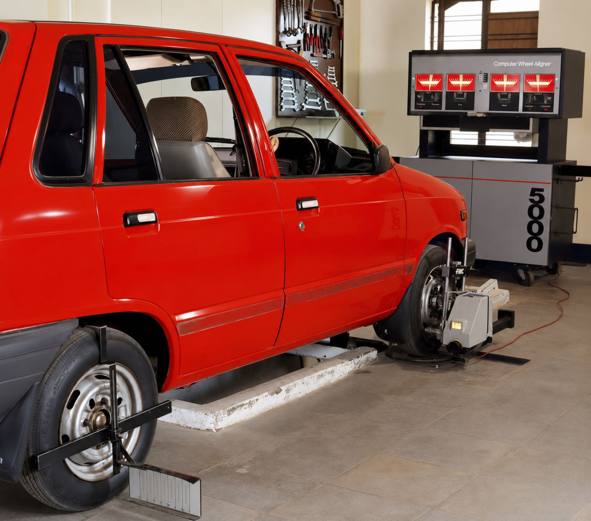
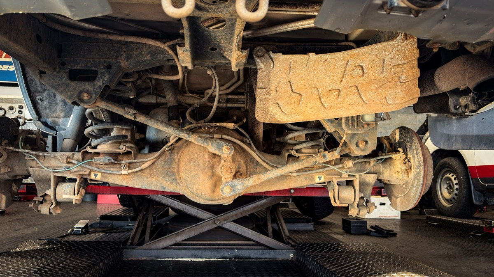

Alignment After a Lift Kit: Every Kit Is Priced Per Wheel
The number that decides what an alignment correction costs you is not the degree rating on the box. It is how many wheels the box covers, and the listings bury that in a spec row. Four alignment kits below all state they include components for one front wheel. Their prices run from $12.99 to $99.99.
Every alignment kit here is priced for one front wheel, and not one title says so. The Moog K80277 is $12.99 and the SPC 82387 is $75.99, and both are listed for a single front wheel — so the same front axle costs either $25.98 or $151.98 depending on which one you buy.
The cheapest part under SPC’s camber/caster search results at $14.99 is not an adjustment kit at all — it is a bag of replacement cam bolts and nuts for a control arm that turns out to be an adjustable rear arm for a Subaru.
The number that decides what an alignment correction costs you is not the degree rating on the box. It is how many wheels the box covers, and the listings bury that in a spec row. Four alignment kits below all state they include components for one front wheel. Their prices run from $12.99 to $99.99.
A lifted truck needs both front wheels corrected. So the real cost of the parts is double whatever the shelf price says — and the spread across the same job is wider than the spread in the prices.
Every figure on this page was read from the product listing on 18 November 2026. Prices and stock move; the spec rows are the part that matters.
The per-wheel arithmetic
Here is the same information the product pages give you, with the multiplication done and shown:
| Kit | Listed price | Covers | Front axle | Correction published |
|---|---|---|---|---|
| Moog K80277 | $12.99 | one front wheel | $25.98 | none (adjustable plates) |
| Moog K6669 | $65.99 | one front wheel | $131.98 | ±1.00° camber, ±1.00° caster |
| SPC 82387 | $75.99 | one front wheel | $151.98 | ±2.00° camber |
| SPC 86376 | $66.99 | one front wheel | $133.98 | ±1.50° camber, ±1.50° caster |
| SPC 86377 | $99.99 | not stated | — | not published |
The Moog K80277 costs $12.99. The SPC 82387 costs $75.99 — nearly six times as much — and both do one front wheel. If your truck needs a small correction, that gap buys you nothing.

What “sold as a pair” actually means
SPC 82387, Ram 2500/3500, one front wheel → $75.99 · not yet reviewed · checked 18 Nov 2026
Two of these listings say sold as a pair and the rest say sold as a kit, and it is tempting to read “pair” as “both front wheels.” It is not.
The SPC 82387 spec row reads Includes Alignment Components For: One front wheel and Quantity: Sold as a pair. The pair is two cam bolts for one wheel hub, because a front strut takes a bolt top and bottom. You need two kits to do an axle.
The SPC 86376 reads the same way: ±1.50° camber and ±1.50° caster, one front wheel, sold as a pair. Also two kits for an axle.
This is the single most expensive misread on the shelf. A $75.99 kit that becomes $151.98 at the counter is not a pricing trick — the listing states it plainly — but it is stated in a spec row, not in the title or the price.

The correction number is what you are buying
Moog K6669, ±1.00° camber and caster, one front wheel → $65.99 · checked 18 Nov 2026
SPC 86376 heavy-duty cam bolts, GM HD truck, ±1.50° → $66.99 · checked 18 Nov 2026
Camber is the lean of the wheel when viewed from the front. Caster is the tilt of the steering axis when viewed from the side. A lift kit changes suspension geometry and both can move out of the factory window, which is why a lifted truck often cannot be brought back to spec with the original non-adjustable hardware.
The kits differ in how much they can pull back:
- Moog K6669 publishes ±1.00° camber and ±1.00° caster using an eccentric bushing. This is the standard, modest correction.
- SPC 86376 publishes ±1.50° camber and ±1.50° caster using a cam lock plate, and its listing describes it as a GM heavy-duty truck part.
- SPC 82387 publishes ±2.00° camber only — a larger camber window for the Ram 2500/3500, with caster not rated on the listing.
Buy the correction you need. A ±2.00° kit on a truck that needed ±0.5° is money spent on range you will not use, and a ±1.00° kit on a truck that needs ±1.8° will not get you there at any price.

The kit that publishes no correction at all
SPC 86377, 2019+ Silverado/Sierra front cam kit → $99.99 · checked 18 Nov 2026
SPC 86377 at $99.99 is the most expensive alignment part here, and its spec block lists no correction degrees and no per-wheel quantity. What it does list is the application, in the product description: GM1500 front camber/caster cam kit, Silverado 2019-current, Sierra 2019-current, Escalade/Yukon/Tahoe 2021-current.
So the most expensive option is the one whose usable specification is a vehicle list rather than a degree figure. If your truck is a 2019-or-newer Silverado or Sierra, that may be exactly right — a cam kit designed for one platform can deliver correction a generic kit cannot. But you cannot compare it to the others on degrees, because it does not give you any. You would have to ask SPC.

The $14.99 part that is not an alignment kit
SPC 6766099, replacement hardware only → $14.99 · not yet reviewed · checked 18 Nov 2026
Searching for camber/caster kits surfaces SPC 6766099 at $14.99, and at that price it looks like the budget answer to this whole article. It is not.
Its spec row says Part Type: Wheel Alignment Kit Replacement Components and its notes say Includes cam bolts with nuts. Replacement hardware for SPS-67660. It is a hardware bag for a different part. It adds no adjustment range to anything.
The part it services, SPC 67660, is $195.99 and its own listing describes it as Control Arm, Adjustable, Alignment, Rear, Scion, Subaru, Each — an adjustable rear control arm for a Subaru. Nothing in that chain is a front alignment kit for a truck.
This is worth naming because the search results do not separate them. A part type of replacement components sitting in the same result set as complete kits, at the lowest price in the set, will catch people. Check the part type before the price.
What a lift actually does to your alignment
A suspension lift raises the frame relative to the axle, and on an independent front suspension that changes the angle of the control arms and the steering tie rods. The result is typically more negative camber and a caster change, and the toe setting moves with them.
That is why the answer to “do I need an alignment after a lift” is yes, and why the answer to “can my shop just align it” is only sometimes. The factory hardware on many trucks has little or no adjustment built in. If the alignment machine runs out of adjustment range before the numbers come into spec, a kit like the ones above is the part that gives the tech more range to work with.
Two things follow from that, and they matter more than the price:
Have the alignment measured before you buy parts. The printout tells you how far out each wheel is, and that number selects the kit. Buying a ±2.00° kit because it is the biggest is guessing.
Both front wheels, always. Camber and caster are set per wheel. Doing one side of an axle leaves the truck pulling, and the second kit is the part most people forget to order.
The fourth option nobody lists as an alignment part
Adjustable upper control arms. These replace the factory arm with one whose length you set, which gives far more correction range than any cam bolt or eccentric bushing — and they are not filed under wheel alignment on the shelf.
They cost substantially more than every part on this page. They are also the correct answer when the alignment printout shows the correction needed exceeds what a cam kit can deliver. If a shop tells you your truck needs control arms, this table is why: the cam kits top out around ±2.00°.
Does any of this touch California emissions law?
No. Wheel alignment parts are suspension and steering components. They are not emissions equipment, no CARB Executive Order applies to them, and they have no bearing on a smog inspection. This is a geometry and tire-wear question.
What I could not verify
- Whether any of these fit your specific truck. Every listing has a “Check the Fit” tool and an applications table that loads separately. I read the specs and prices, not the full application lists. Verify fitment by VIN or year/make/model before ordering — a cam bolt that does not fit your strut is worth nothing at any price.
- The correction range of SPC 86377. The listing publishes an application list and no camber or caster degrees. I did not infer a figure for it.
- Whether the correction ratings are per wheel or per axle. The spec rows say one front wheel for four of these, so I have used that. The degrees themselves are quoted as published.
- Labour cost. No listing prices the alignment service itself, so this article compares parts only. A shop alignment is a separate charge and varies by region.
Topics
- Suspension